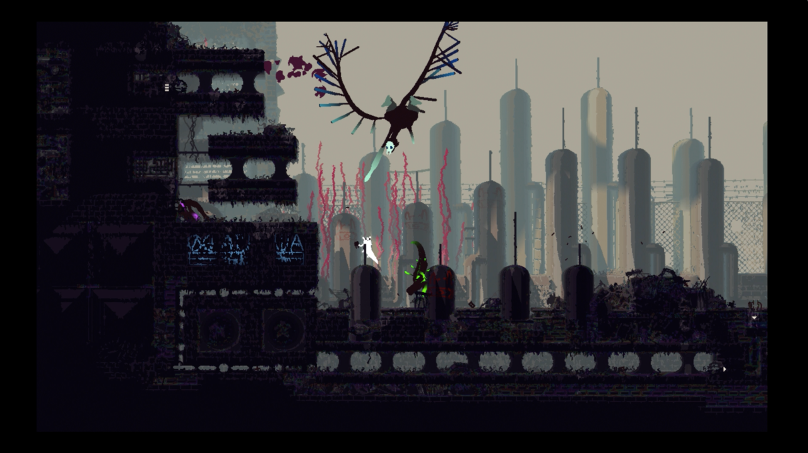

Rain World Review
First Released Mar 28, 2017Reviewed Mar 31, 2017

Rain World effectively illustrates the cruel indifference of nature. As a half-rabbit, half-slug creature trying to reunite with its family, you start smack dab in an unfamiliar land with an ecosystem where you're both predator and prey. Rain is a threat to your survival, but it pales in comparison to the game's many hunters and, unfortunately, unforgiving environments.
Rain is to blame for the rabbit-slug's isolation to begin with. As the opening cutscenes illustrate, the storms are what separated the poor creature from its family. The resulting quest to reunite with its loved ones is a long and arduous 2D trek that challenges you with limited resources and abilities. Your most useful skills are the ones you start with, namely a good throwing arm and a long jump. Ultimately, these are all you need to reach Rain World's end, though the game's pervasive threats made me crave more skills. If you get caught in the rain, you die. The only way you can survive is if you manage to reach one of the game's many waterproof shelters.
Once you reach a shelter, however, you're forced into hibernation, and surviving the long sleep requires consuming a minimum of four food items, be it flies or fruit. A screen's worth of fruit or flies--assuming there are some available--often provides the food you need but it takes a few hibernation periods to replenish. As a result, you're often compelled to explore beyond your comfort zone for other food sources.
Comfort is a relative term in Rain World. You can commit a region's layout and myriad paths to memory, but you're still vulnerable to many merciless predators. Their locations on the map change every time you emerge from slumber. This typically sustains a moderate level of freshness in each play session, though it's not uncommon to find yourself in punishing and unfair situations. Some creatures--like the giant vultures--appear with little to no warning. And if your timing is unlucky, a vicious lizard can be waiting for you at the edge of the next screen, leaving you with no opportunity to react, let alone escape. In a game that forces you to mentally juggle numerous variables to survive, these unpreventable deaths can feel exceedingly frustrating.
If you do manage to create distance between you and a lizard, the ensuing chase can be hampered by platforming issues. Rain World's tutorial offers minimal instruction and learning how to interact with the environment can be vexing. A seemingly simple act like jumping off a bridge to grab a metal rod jutting from the concrete should be easy. Instead, you're forced to move with the finesse of a trapeze artist, the feeling of which is at odds with the urgency of escaping a pursuer you have no chance of defeating.
Survival is a layered experience in Rain World, sometimes to the detriment of your enjoyment. Aside from the demands of reaching shelter with enough food in your belly, forward progress is impeded by gates between each region. Passing those gates requires maintaining a positive win-loss record--in other words, your hibernation frequency has to be higher than your death rate; a seeming bizarre and arbitrary requirement. Given all the game's other demands, this method of proving your worthiness feels harsh and nonsensical in practice. Having to forage and hibernate for the sole purpose of passing a gate feels disrespectful of the player's time since there are no other rewards for killing and eating.
As a result, there's a heightened sense of relief in reaching a new region. As you explore each new area, you're hit with a renewed feeling of resignation and acceptance of the many deaths you'll soon rack up as you reach dead ends and find the mainline path to the next gate. In an unfair process of trial and error, you make leaps of faith off cliffs to test whether falling beyond the bottom of the screen means your death or the discovery of a new area. And when you find a new gate, the tiresome process of hibernating for the privilege of passing that gate begins anew.
The silver lining of forward progress is that you're continually treated to the unique and striking visuals of Rain World's ruined landscape. The surreal creature designs, combined with the lack of humans makes this world feel both eerily lonely and alien. It carries the same imaginative spirit of games like Bioshock and Abzu, where you're too preoccupied admiring the artistry to question the logistics of how these man made environments were constructed within the fiction.
Writer : Berke KIRAN
HOME PC PS4 XBOX ONE TV/FILM REVIEWS Sign In